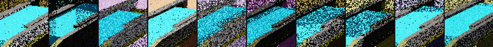

Isaac Sim · Isaac Lab · GPU-parallel PPO · zero gravity
A six-axis arm captures a modular compute unit, pulls it out of a rack, and puts one back — in vacuum, in freefall, holding the module by real contact rather than a simulation shortcut. This is the measured answer to what interface that takes, and what it costs to do it from a camera instead of from perfect knowledge.
every number below names the file it comes from
The result
The same trained policies, the same physics, the same code path. The only difference is where the module's pose comes from: the simulator, or a 64×64 camera looking at the workcell under randomized orbital sunlight. The module is displaced each episode by an amount nothing in the robot's observations reveals, so the image is the only source of the answer.
Vision closes the entire gap. Working blind — no camera, the module assumed to be exactly where the rack nominally presents it — the workflow manages 43.58%. Given the camera it reaches 80.38%, statistically indistinguishable from being handed the simulator's exact answer, with confidence intervals that do not overlap the blind arm.
The blind arm is the control that makes this worth reporting. "Camera matches oracle" alone proves nothing — it is equally consistent with a task that never needed vision. The 36.8-point gap to blind is what says the perception is load-bearing. That control was missing from the first version of this result and the result was not worth much without it.
And the other half of that sentence deserves the same scepticism. Camera and oracle scoring 80.38% each, to the digit, reads as a triumph and is closer to a warning: two estimators that cannot be told apart mean the task was not asking either of them for much. Sharpening the capture skill so it servos to 4 mm instead of 10 separates them — oracle 79.17%, camera 69.97%, blind 59.90%, with oracle and camera intervals that no longer overlap. That 9.2-point gap is the first non-zero cost of perception measured here, and it appears precisely because a tighter capture needs a better estimate of where the module is. The numbers above remain the promoted configuration; this one is not promoted, because the same change costs the chain 8 points until the insertion skill is retrained to absorb it.
evidence/vision_workflow_blind_certification.json · vision_workflow_camera_certification.json · vision_workflow_oracle_certification.json
What the robot actually sees
64×64 pixels, shown at 4×. The orbital sun's intensity, angle and colour temperature change per episode; so do the rack's albedo, metallic and roughness; so does the sensor noise; and so does the module's position, by an amount the robot is never told. Every pose estimate behind the result above was made from a frame like one of these.

The interface
The first attempt gripped a smooth post with flat pads. It held 6 N — against the 66.4 N that the insertion's own contact reaction demands. No amount of training fixes that; it is a statement about geometry. Redesigning the module-side feature against the gripper's measured collision envelope, rather than its nominal dimensions, changed the answer by an order of magnitude.
Getting there needed one non-obvious idea. A tapered pin converts closing force into thrust along the very axis the module has to leave by, so gripping harder pushes the payload away. Capture and hold had to become two separate commands — close gently at 0.48 rad, firm to 0.68 once loaded. The window is narrow and asymmetric: 0.44 holds 63 N, 0.52 holds 68 N, 0.56 collapses to 26 N.
evidence/grapple_pin_axial_pull_gate.json · gripper_collision_envelope.json
Zero gravity is not just "gravity off"
docs/status.md · evidence/grapple_pin_rated_grip_force.json
Skills
Every number is deterministic evaluation on three held-out seeds, pooled with a Wilson interval, with terminal state captured before the simulator's automatic reset can overwrite it. A recorded video is a demonstration; only a pooled multi-seed report is evidence.
| Skill | Episodes | Success | 95% CI |
|---|---|---|---|
| Capture the module (fails its 95% gate) | 9,011 | 88.78% | 88.1 – 89.4 |
| Insert into the rack | 3,000 | 98.27% | 97.8 – 98.7 |
| Insert into either bay, worse bay | 3,004 | 98.34% | 98.1 – 99.0 |
| Extract from the rack | 9,005 | 99.02% | 98.8 – 99.2 |
| Install, chained end-to-end | 576 | 96.35% | 94.5 – 97.6 |
| Removal, chained end-to-end | 576 | 98.78% | 97.5 – 99.4 |
| Relocate, bay 1 → bay 2 | — | does not complete | — |
Two of these need reading carefully, and both readings are the interesting part. Capture's 88.78% fails its gate, and the same checkpoint overruns its capture phase once in 192 chained installations. Both are true: the skill task ends an episode the moment its failure predicate fires, and the chain has no such term — it hands over on a 10 mm grip and otherwise lets the capture keep closing. So capture reliably produces the grip the chain needs, and fails a fixed-episode predicate at the two widest starting offsets. Quoting either as the other is the error the whole evidence discipline here exists to prevent. And the relocation — the changeout every skill above was built for — does not complete. Every part of it is certified and the chain still times out crossing between bays, because a single-point pin cannot hold the module's attitude through 734 mm of free flight. That is measured, not suspected, and it is stated here rather than left out.
Extraction is the physically hard one: it moves the module 495 mm out of all constraint, ending held only by a line contact on a taper, where insertion moves 167 mm into rails whose lead-in flares do the alignment mechanically.
Removal took three fixes and none of them was mechanical. Nothing in the reward paid the arm to stop, only to travel. The penalty meant to protect the grip angle saturated at exactly the angle the policy then parked at, so past that point it cost nothing. And the gripper kept squeezing after the module was out: the pads rest at 0.223 rad on the taper, both the capture and holding commands drive well past that, and a taper turns squeeze into thrust along the pull axis. While the module is in its rails they absorb it; once it is free, nothing in freefall does. Traced through the 0.7 s the system waits before re-checking, a module that came out perfectly still accelerated to seven times the allowed drift — at full motor torque, with the grip never slipping. So the schedule gained a third command: capture gently, hold hard to pull, retain gently once the part is free.
Installation passed its gate without retraining anything, and how it got there is the more useful story. The obvious theory was that the insert policy is thrown by the states a real capture hands it. Measured on the same checkpoint: 95.57% from its own reset, 93.06% on the real hand-off, 90.45% inside the chain — the hand-off costs two and a half points, not the fifteen assumed. Fine-tuning on that distribution for 300 epochs moved the chain from 89.41% to 88.37%: nothing. What actually moved it was a clock that had been cutting successful insertions off at p95, and a settling window that kept squeezing a module already seated in its bay — a violation of the project's own rule that any phase which waits must either command or retain. Together: 96.35%. Raising the reward term that six of seven failures trip, which was the tempting fix, cost twenty points.
Two of the numbers above replaced wrong ones, both on 2026-08-16, and the mechanism was the same twice. Extraction and removal previously read 68.36% and 14.06%; they had been certified before the criterion tightened, and against the real one — a removed module settled to 0.0143 m/s, derived from the 0.7 s the chain waits — not one of 6,156 counted successes qualifies. Installation previously read 84.38%; that report describes the identical policies, by checkpoint hash, but predates a change to the capture phase's time budget by 8.5 hours. Neither was a bad measurement. Both were good measurements of a system that had since moved, and the only defence is checking a report's timestamp against the history of the criterion it uses, every time.
Industrialisation
The first question anyone building this asks. A pose estimator trained through a perfectly mounted camera demands a perfectly mounted camera — a 2 mm mount error quadruples its error. Retraining across eight deliberately mis-mounted cameras loosens that requirement about five-fold.
| Camera mount error | Trained on one mount | Trained across mounts |
|---|---|---|
| 2 mm | 95.6% | 99.2% |
| 5 mm | 68.9% | 96.3% |
| 10 mm | 25.0% | 100.0% |
| 5 mrad tilt | 87.0% | 99.7% |
| 20 mrad tilt | 42.3% | 97.7% |
Estimates falling inside the 20 mm capture tolerance. Both fail beyond the randomized envelope, which is left visible.
And the trade has a sting worth reporting. The mount-robust estimator is better on every calibration and worse in the loop — 38.19% workflow success against 80.38%. Its held-out error is 2.51 mm, barely worse than 1.75 mm, but its time-averaged bias is 9.15 mm against 5.88 mm, and bias is the part no filtering removes. An offline perception metric did not predict closed-loop success.
evidence/module_pose_head.json · estimate_stability.json · artifacts/calib/
The obvious expectation is that a heavier module is harder. It is the other way round, and the reason is the mechanism above: the pin's taper converts closing force into thrust, and thrust divided by a small mass is a large acceleration. Light modules get pushed away.
A first pass at 96 episodes a point produced a 36-point non-monotonic scatter; it was discarded and the extremes re-run at the same power as every other number here. A specification would take a minimum serviceable mass from this, which is not the requirement anyone expects to write.
evidence/vision_workflow_payload_2kg_certification.json · _80kg_certification.json
Three independent training runs, 12,000 held-out frames each: a 0.05 mm spread. The perception result is not a lucky seed. The reinforcement-learning policies are single-seed, and that is the largest remaining caveat on this page.
Onboard cost
Perception head plus skill policy, batch size one, against the 33.3 ms control period everything here was certified at. Sensor readout, transport and the inverse-kinematics solve are not included and on real hardware usually dominate; this is the compute the learned part costs.
evidence/inference_budget.json
The other half of the record
Five hypotheses were tested and refuted with measurements. They are kept because they are what justified the decisions that followed, and because a project that reports only its wins is not reporting.
Two probes were also caught measuring nothing at all — a yaw gate that reported an identical number with and without the feature it tested, because the rails held the module still; and a camera-shake probe whose camera moved by exactly 0.0 mm. Both were deleted along with the conclusions they had produced. The rule that caught the second one was written after the first.
Method